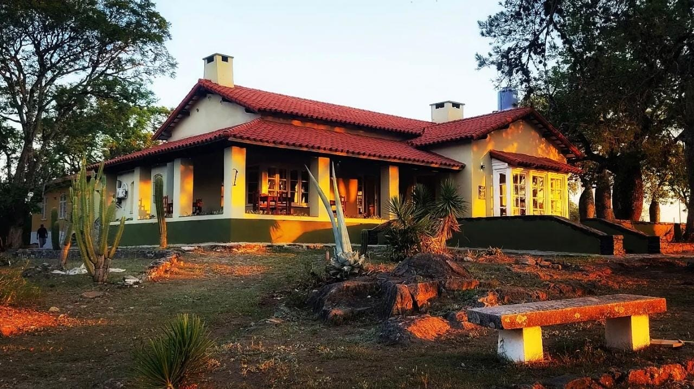
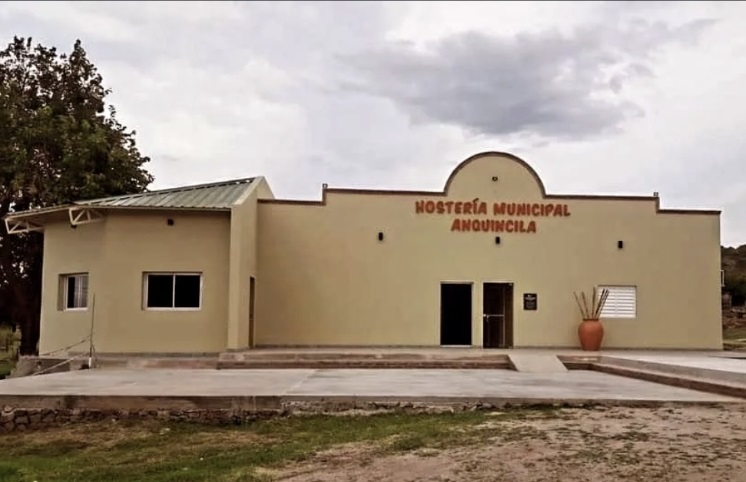

Parque Arqueológico La Tunita
Para planificar su estadía y disfrutar de las excursiones al Parque Arqueológico La Tunita, la zona cuenta con alternativas de hospedaje ubicadas en las localidades cercanas de Ancasti y Anquincila, ofreciendo comodidad y un entorno natural propicio para el descanso.
Ubicación: Localidad de Ancasti (a 12 kilómetros del parque).
Descripción: Establecimiento oficial municipal, punto estratégico de referencia donde también se realizan las gestiones logísticas y el retiro de entradas para las visitas al parque.

Ubicación: Localidad de Anquincila (a 21 kilómetros del parque).
Descripción: Espacio de alojamiento municipal acondicionado para recibir a los visitantes que recorren las sierras orientales de Ancasti.

Ubicación: Localidad de Anquincila (a 21 kilómetros del parque).
Descripción: Alternativa de hospedaje particular ideal para quienes buscan una experiencia de descanso tradicional en la localidad.
Ubicación: Localidad de Anquincila de Abajo (a 24 kilómetros del parque).
Descripción: Opción de alojamiento de cálida atención ideal para disfrutar de la tranquilidad y el paisaje característico de las sierras de la región.